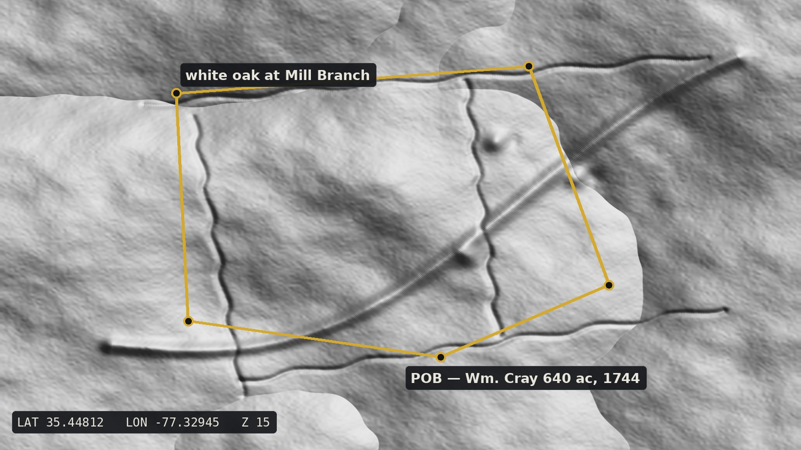
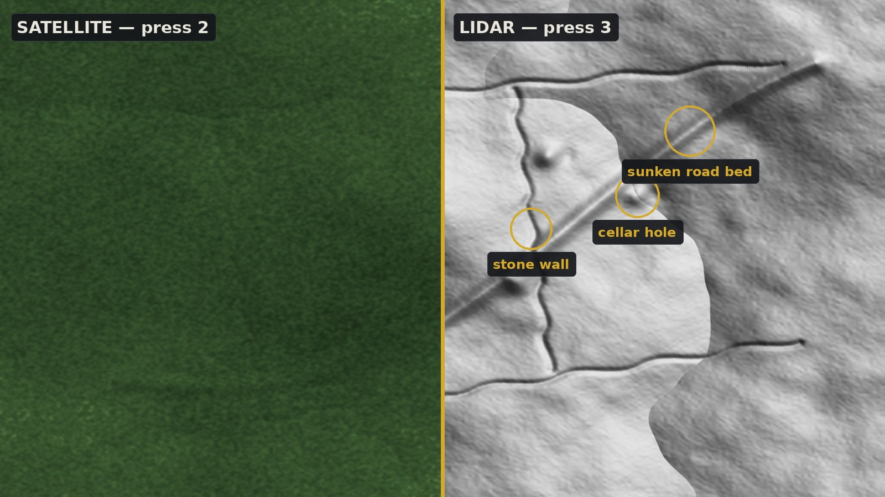
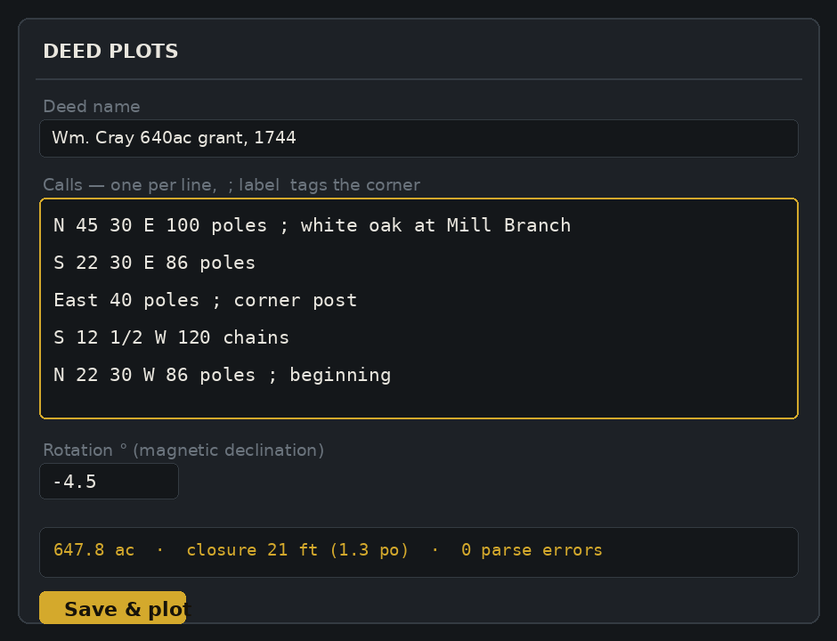

Three tools in one window: bare-earth LiDAR that strips away the forest, a deed plotter that draws old grants onto the modern landscape, and statewide parcel lines with today's owners. Hidden homesteads, lost boundaries, and whose door to knock on — all 100 North Carolina counties.

Under summer canopy, an old homestead is invisible. Under LiDAR, the cellar hole, the stone walls, and the sunken road that served them are as plain as the day they were abandoned. LidarTrace switches between street map, satellite, and five LiDAR renderings with single keystrokes — the fastest way to vet what the terrain is telling you.

Type a deed the way the surveyor wrote it in 1744 — poles, chains, links, fractional bearings and all — and LidarTrace draws it on the real terrain.

From Cherokee to Currituck: 1-meter USGS 3DEP LiDAR in five renderings — multidirectional hillshade, classic, high-contrast, slope, and elevation-tinted — plus a drape mode over satellite at adjustable opacity.
Statewide NC property lines via NC OneMap: owner, acreage, address, and value for the parcel under your cursor — the polite way to plan a permission visit.
The metes-and-bounds workflow veterans know, drawn live over LiDAR, satellite, streets, and parcels instead of a blank canvas.
Workspaces save automatically as plain JSON files on your own disk. No cloud, no account, no telemetry. Ever.
Export a whole research area to a single portable file. Your co-researcher imports it and sees every tract and label — merged, not overwritten.
One payment, two computers, free updates delivered automatically. Works offline after activation (map data requires internet).
Straight from the deed: N 45 30 E 100 poles ; white oak. LidarTrace parses every line and flags anything it can't read.
Drag the point of beginning across the LiDAR until the deed's branches, ridges, and corners lock onto the real ones. Rotate for declination.
Flicker to satellite and streets to plan access, click the parcel for today's owner, and ask permission properly.
The app runs offline once activated, but the map data — LiDAR, satellite, county boundaries, parcels — streams live from USGS, MapTiler, the US Census, and state GIS services, so you'll want an internet connection while researching. Your deed plots and labels are stored locally and never leave your machine.
This edition is all-in on North Carolina: statewide parcel and owner data for all 100 counties. Editions for other states will follow as demand grows — email us which state you research and it moves up the list. (Existing customers get NC forever, of course.)
As accurate as the deed. LidarTrace plots exactly what the calls say and reports the closure error so you can judge the original survey's quality. It's a research aid, not a survey instrument — for legal boundaries, hire a licensed surveyor.
Two at a time per license. Moving to a new PC? Deactivate the old one yourself from the About dialog — no support ticket needed.
Completely. Workspaces are plain JSON files in your own app-data folder. There's no cloud sync, no account, and no analytics of any kind.
LidarTrace is built and supported by one person who does this kind of research too. Email support gets answered by the developer, not a ticket system.